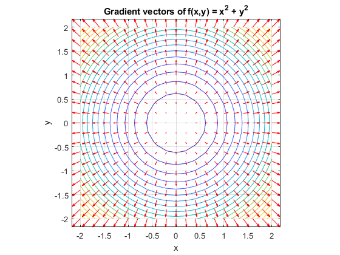
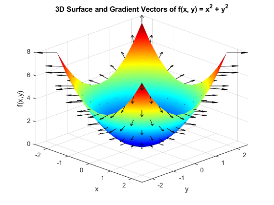

nx = 3;
ny = 2;
conn = connectivity2D(nx, ny);
disp(conn);
f = @(x, y) x.^2 + y.^2;
[x, y] = meshgrid(-2:0.2:2, -2:0.2:2);
[fx, fy] = gradient(f(x, y), 0.2, 0.2);
contour(x, y, f(x, y), 20); hold on;
quiver(x, y, fx, fy, 'r');
title('Gradient vectors of f(x,y) = x^2 + y^2');
xlabel('x'); ylabel('y');
axis equal; grid on;
[x, y] = meshgrid(-2:0.4:2, -2:0.4:2);
f = x.^2 + y.^2;
[fx, fy] = gradient(f, 0.4, 0.4);
figure;
surf(x, y, f);
shading interp
colormap jet
hold on;
quiver3(x, y, f, fx, fy, zeros(size(f)), 0.8, 'k');
title('3D Surface and Gradient Vectors of f(x, y) = x^2 + y^2');
xlabel('x'); ylabel('y'); zlabel('f(x,y)');
axis tight;
grid on;
view(45, 30);
function conn = connectivity2D(nx, ny)
conn = zeros(nx * ny, 4);
element_index = 1;
for j = 1:ny
for i = 1:nx
node1 = (j - 1) * (nx + 1) + i;
node2 = node1 + 1;
node3 = node2 + (nx + 1);
node4 = node3 - 1;
conn(element_index, :) = [node1, node2, node3, node4];
element_index = element_index + 1;
end
end
end
1 2 6 5
2 3 7 6
3 4 8 7
5 6 10 9
6 7 11 10
7 8 12 11
 